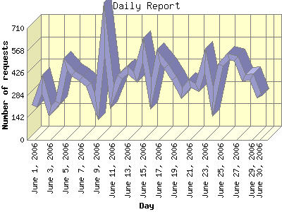

Report generated by Analog 6.0 and Report Magic 2.21
|
Web Server Statistics for "Harish Narayanan (hnarayan) - June 2006" Report generated by Analog 6.0 and Report Magic 2.21 |
The Daily Report identifies the activity for each day within the reporting period. Remember that one page hit can result in several server requests as the images for each page are loaded.

| Day | Number of requests | Number of bytes transferred | Percentage of the bytes | Percentage of the requests | |
|---|---|---|---|---|---|
| 1. | June 1, 2006 | 217 | 11.975 MB | 1.99% | 1.86% |
| 2. | June 2, 2006 | 356 | 11.918 MB | 1.98% | 3.06% |
| 3. | June 3, 2006 | 186 | 7.344 MB | 1.22% | 1.60% |
| 4. | June 4, 2006 | 236 | 10.877 MB | 1.81% | 2.02% |
| 5. | June 5, 2006 | 481 | 9.711 MB | 1.61% | 4.13% |
| 6. | June 6, 2006 | 423 | 15.109 MB | 2.51% | 3.63% |
| 7. | June 7, 2006 | 393 | 17.776 MB | 2.95% | 3.37% |
| 8. | June 8, 2006 | 350 | 9.691 MB | 1.61% | 3.00% |
| 9. | June 9, 2006 | 212 | 4.509 MB | 0.75% | 1.82% |
| 10. | June 10, 2006 | 704 | 21.291 MB | 3.54% | 6.04% |
| 11. | June 11, 2006 | 276 | 16.637 MB | 2.76% | 2.37% |
| 12. | June 12, 2006 | 399 | 15.767 MB | 2.62% | 3.42% |
| 13. | June 13, 2006 | 443 | 13.122 MB | 2.18% | 3.80% |
| 14. | June 14, 2006 | 399 | 12.074 MB | 2.00% | 3.42% |
| 15. | June 15, 2006 | 572 | 70.812 MB | 11.76% | 4.91% |
| 16. | June 16, 2006 | 293 | 12.411 MB | 2.06% | 2.52% |
| 17. | June 17, 2006 | 529 | 12.962 MB | 2.15% | 4.54% |
| 18. | June 18, 2006 | 469 | 12.596 MB | 2.09% | 4.03% |
| 19. | June 19, 2006 | 391 | 9.309 MB | 1.55% | 3.36% |
| 20. | June 20, 2006 | 297 | 116.872 MB | 19.41% | 2.55% |
| 21. | June 21, 2006 | 358 | 10.809 MB | 1.79% | 3.07% |
| 22. | June 22, 2006 | 333 | 13.333 MB | 2.21% | 2.86% |
| 23. | June 23, 2006 | 503 | 13.050 MB | 2.17% | 4.32% |
| 24. | June 24, 2006 | 241 | 70.060 MB | 11.63% | 2.07% |
| 25. | June 25, 2006 | 475 | 14.236 MB | 2.36% | 4.08% |
| 26. | June 26, 2006 | 531 | 10.586 MB | 1.76% | 4.56% |
| 27. | June 27, 2006 | 516 | 13.198 MB | 2.19% | 4.43% |
| 28. | June 28, 2006 | 395 | 19.425 MB | 3.23% | 3.39% |
| 29. | June 29, 2006 | 401 | 16.031 MB | 2.66% | 3.44% |
| 30. | June 30, 2006 | 273 | 8.693 MB | 1.44% | 2.34% |
Most active day June 15, 2006 : 377 pages sent. 704 requests handled. 22,324,806.00 served.
Daily average: 388 requests handled. 20.073 MB served.
This report was generated on September 9, 2006 15:59.
Report time frame June 1, 2006 00:20 to June 30, 2006 23:41.
| Web statistics report produced by: | |
 Analog 6.0 Analog 6.0 |  Report Magic 2.21 Report Magic 2.21 |